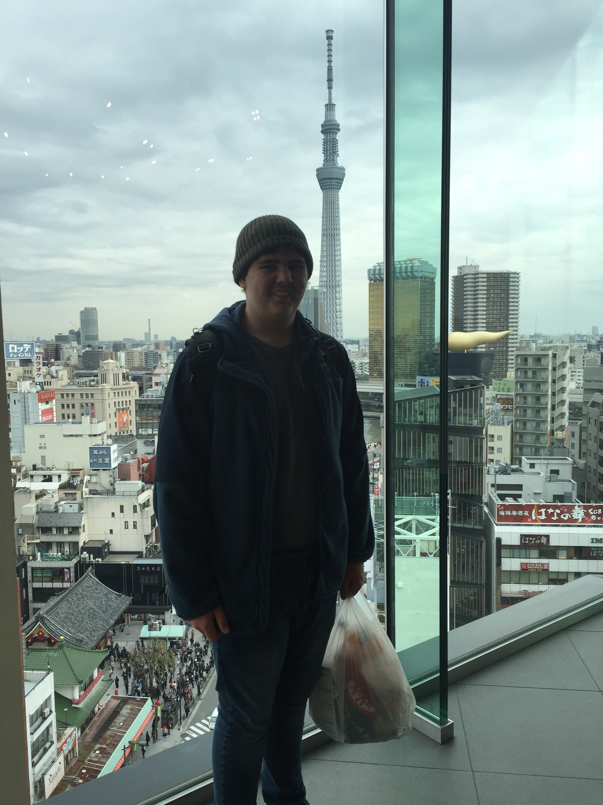

Profiles
Learn about the individual members of our Team.
Group Reflection
Most members contributed thoughts and ideas very early, there was little fear that the group would fail to produce the required assignment by the due date.
Stretch goals and section deadlines could be improved to keep the project pipeline secured. As some sections are dependent on other sections completion it will keep the project on track that stretch goals could be set and maintained. The group’s overall ability to work collaboratively using services such as Teams could be improved. This accommodates more efficient work and would result in a more collaborative set of ideas, rather than having to gather work from all team members for formatting at the end of the assignment period.
It was surprising that Github was not utilized more. Basically it ended up as the vehicle to host the website and nothing more. Perhaps it is the logical decision seeing as Teams has a similar common file mechanism, meaning that the additional use of Github would be redundant, although Github has further version control functionalities not available through Teams. The group was surprised with how accessible team members were in terms of communication. It was initially thought that having team members spread around various locations and time zones would mean that efficient communication would be sporadic. This was far from the case however as the team was often fast to respond to any questions or to offer help to anyone who was struggling to complete their work.
Working in groups on a short timeline in turbulent circumstances is always a challenge. The most important thing we have learned as a group is to be proactive with initiating group decisions. There is no need for a designated group leader, but leaders themselves are clear through their actions to drive group production. Early on a lot of open questions were asked of the group that introduced the topic but didn’t provide much in terms of ideas or a proposal. Later on when decisions were needed these posts changed and it was clear that thought had been given to the subject. The difference in result was clear, members immediately reacted quickly with positive feedback and ideas building upon the foundation from the original poster.
The Github log of activity does not at all reflect the groups overall progress, or progress over time. Github was not utilized as the main operations centre for the group and as such was only used where absolutely necessary to ensure completion of the set tasks; for hosting of the group website.
Damian Dousset - S3755544
https://damiand84.github.io/Introduction-to-IT-Assignment-1/
My name is Damian, this is my 12th subject towards a bachelor of business “Financial Planning”. During my limited down time when I am not working, studying, helping raise our 3 children or coaching my childrens’ soccer teams, I enjoy building wooden model ships. I have been building them during my free time for the last two years and am currently building my second model, a 10th century Viking Longboat. I aim to work on progressively more complicated models and ultimately would like to build the HMS Endeavour as commanded by Captain James Cook.
IT Interest
I am interested in IT because I believe that it is an important subject to grasp moving into the future due to speed with which technology is influencing our work and private lives. With the ultimate goal of becoming a financial planner or an investment analyst, I will be required to rely heavily on IT when it comes to following the financial markets, compiling customers financial plans or providing investment recommendations, providing updates to clients and managing a business. On a more personal note I am excited by the prospects that AR, VR, robotics and AI offer to the future in the way we conduct business and are entertained.
IT Experience
I have had an interest in IT since a young age. While not being involved with in-depth computer building or programming, I have always managed to understand the basics enough to get me by, from downloading and installing games, creating spreadsheets, regular use of excel and Microsoft word and occasionally PowerPoint.
Test Results
Myers-Briggs Personality test result: - Your type is the ISTJ
As an ISTJ, you tend to be reserved, orderly, and practical. You are likely self-sufficient, hardworking to meet obligations, and prefer to be alone or in small groups of close friends.
Learning Styles test result: - Kinesthetic 38%, Visual 34%, Auditory 28%
Kinesthetic is your primary learning style. Kinesthetic style is learning by doing. You learn in this manner whenever you capture new information through the process of physical activity. It is often referred to as a hands-on learning experience.
Creativity test result: - My creativity score is 47.63, Typical is 63.15.
In regards to the Myers-Briggs Personality test results I agree with a type of ISTJ, I am normally reserved, orderly, practical and self-sufficient. In most cases it is also true that I prefer to work alone or in a small team.
In regards to the learning styles test result I would also agree that I am a kinesthetic learner and I like to learn by doing. Whenever I am asked to do something I usually like to be shown how, I gain very little from a text-based explanation of a theory and would prefer a diagram or a model.
I also find I can’t sit for too long and require some form of physical activity to keep me awake and focused. I enjoy adventuring in the outdoors; however, I am also fond of reading.
In regards to the creativity test, Although a free 5 minute online creativity test may not be entirely accurate, I should in any case be mindful of the result and if I feel that my creativity is lacking I should work to exercise the creative portion of my brain, this could be in the form of sketching items, building Lego creations with my kids or trying my hand at learning a musical instrument.
Ideal Job: Financial Planner or Investment Analyst
Reflection
The use of Microsoft Teams was beneficial due to the fact that all of the group members were able to have access to and edit each of the group documents under the “Files” tab.
It would have been beneficial for the group to come together for a Video/ voice chat at the start of the assignment so that the task could have been broken down into parts and divided up amongst the group so that each member would know what their responsibility was and the responsibility of the other group members, but this is not always possible due to everyone’s differing circumstances and commitments.
One thing I found surprising was how varied the project ideas were between all the members taking into account each group members different backgrounds, interests and needs.
The one thing that I have learned about groups from this assignment is the personal circumstances of members that could impact group assignments are wide and varied. Whether due to illness, natural disaster or even global pandemics that raise issues like job uncertainty or a change to children’s schooling, when working as a team it is important to remain flexible to the needs of others and a willingness to find a solution.
Although there was a difficult start due to members being unresponsive or quitting the group, overall I feel we have produced a quality report.
Shane Gillespie - S3807290
Website-N/A
My name is Shane. I’m in my first year of studies towards a Bachelor’s in IT, with my areas of interest being cybersecurity and cloud computing. I enjoy spending my time reading and teaching myself new things. My IT experience currently consists of me trying to teach myself some basic coding in my spare time, however I look forward to increasing my knowledge as I progress in my studies.
IT Interest & Experience
Team text 2
Test Results
- Myers-Briggs: INTJ
- Learning Style: Auditory
- Personality Test: Openness: 87.5%, Conscientiousness: 23%, Extraversion: 29%, Agreeableness: 65%, Neuroticism: 87.5%
Ideal Job: Cybersecurity Engineer
Reflection
Everyone in the group worked really hard to get the assignment in on time. A few of us had some setbacks that affected the pace but the quality of work everyone produced was great and I think we worked well together.
What could be improved next time would be setting up group meetings. It is difficult because of conflicting schedules and also because a lot of unpredictable things are happening to a lot of people right now, but if we could organise meetups, I think it might help future projects come together quicker.
One thing that was surprising was how quickly the group bounced back after setbacks. We lost a few team members along the way but even through some disorganisation the group kept in contact and kept working on the assignment.
One thing I’ve learned about groups is how important communication is and how hard it can be when life gets in the way. Trying to organise meets ups next time might remedy this, although again it can be hard with everyone’s differing schedules.
Andrew Fraser - S3666690
I am an Australian citizen living in Brisbane who works as a Supply Chain Manager for a Marine Construction company conducting projects around the world. I have worked around Australia, in Indonesia, Singapore, Egypt, Nigeria, Belgium and Germany.
I am studying a Bachelor of Business: Logistics and Supply Chain Management which I begun in mid-2016 and am in my final few units. In SP4 2019 I enrolled in Introduction to Information Technology as an elective, but was informed from student services that this unit was too similar to another compulsory unit and that if completed, I would not receive credit for IIT. Happily, the compulsory unit is not available until 2021 and IIT is the substitute unit!
Outside of work and study I am a novice powerlifter who was preparing for my first sanctioned meet in Sydney in May, which unfortunately looks like it will be cancelled.
IT Interest & Experience
My interest in IT was sparked as a teenager, through video games, and then again through the course of my career, having witnessed the growing capabilities and usage of IoT, among others, in industry. Particularly clear to me is the moment our Manager Director sent through the profiles of two IoT companies with the message “Find a useful application of these platforms on your project and report back to me”.
My experience in IT is reasonably limited, stemming from learning in studies and everyday professional activities. I am a competent user of the basic Office suite, have taken part in development of our proprietary ERP, entirely as a key user, and am a user of other data platforms, such as Power BI.
I chose to study at the Royal Melbourne Institute of Technology due to the major they offered, Logistics and Supply Chain Management. My choices at the time through distance learning was a the Diploma to Professional Diploma pathway through the Chartered Institute of Procurement and Supply, a Bachelor of Business through RMIT, Griffith or UniSA, or the Bachelor of Business: Logistics and Supply Chain Management with RMIT. Due to the delivery method, specificity, learning pathways and career opportunities I decided upon RMIT and have never regretted the choice.
During the Introduction to Information Technology unit I expect to garner cursory knowledge about useful platforms and applications of IT. I still have one elective unit to complete and I seek to select a unit outside of my typical knowledge-base while still learning something with relevancy to my chosen occupation. Not having any experience with programming, my initial goal is to learn about the uses of programming, abilities and capabilities of different programming languages, and to reflect upon the useful applications of programming languages in my everyday professional activities.
Test Results
Myer-Briggs Type Indicator
Conducting the basic Myer-Briggs Type Indicator test using the explanations required in the MBTI Basics page of the Myers-Briggs website I have the result that I am personality type ESTJ; Extraversion, sensing, thinking and judging.
- According to this type my dominant traits are:
- "Active organizer;
- Logistics;
- Assertive;
- Fact minded;
- Decisive;
- Practical;
- Results-oriented;
- Analytical;
- Systematic;
- Concrete;
- Critical;
- Responsible;
- I take charge;
- I use common sense."
(The Myer-Briggs Foundation)
Learning Styles Test

(Learning Styles)
I conducted the Learning Styles test on the Personality Max website which is a free and online test. The result is that I am a dominant kinesthetic, or hands-on learner, closely followed by visual-style learning. As such I am characterised as one who prefers learning through activities and experiences rather than recollections and lectures.
Learning style test results https://personalitymax.com/report/?ls=77-54-87&name_key=59560176f7
Logical Reasoning test
In the online Logistical Reasoning Psychometic test I scored in the 93rd percentile, with accuracy of 67% and speed at 100% (Assessment Day).
Logistical Reasoning test results https://www.assessmentday.co.uk/logic/free/LogicalReasoningTest1/index.php
What the Psychometric Test Results Say About Me
Personality, Learning style and aptitude tests are mechanisms for employers to analyse the characteristics of employees or applicants against a known metric, and can be used to accurately interpret suitability or potential for a role or task. From the results of the test I can reflect on some truths that are highlighted; I am task-oriented, deal well with people so long as I feel I am being “dealt straight”, prefer hands on experience, prefer to understand the situation through visualization, am relatively decisive and am Impulsive. I should be conscious of these things and develop mechanisms to counteract or mitigate the negative manifestations of these traits. For example, I am easily distracted, am task-oriented, work in bursts and are motivated by deadlines. The manifestation of these traits is that I will prioritise my work and “domino” each by significance and due date, but have the potential to leave tasks that I view as lower priority until closer to the deadline, especially if I become fixated or distracted. Therefore I can mitigate the negative consequences by setting myself stretch goals and progressive objectives for each task on my list, and work while having music or a light podcast playing in the background to provide enough stimulation to prevent my mind from wandering.
These traits can influence my behaviour in a team through all stages of the project; formation, planning, and execution. In the formation stage I will and have proven to lead, making introductions and decisions quickly, knowing that others may be uncomfortable in such a role and potentially even relieved having this duty removed from the table. In the planning stage I may become frustrated if too much time is spent discussing aspects which I consider minutiae, and would rather start work so long as the aspect cannot become an obstruction. On the other hand, I enjoy working with people and have significant experience in conflict resolution, so I am able to make decisions on team direction without begrudging others their rightful say. I do not mind if the decision is the “wrong” one, as I would see it, so long as we have sufficient skills, resources and opportunity to overcome the obstacles. In the execution I must be conscious of the project timeline and would have to set operational objectives for myself to ensure my work is delivered in the time and standard required for all others in the team.
When forming a team I should be conscious of the negative manifestations of my lead traits. During people management training early in my career it was demonstrated to each of us, the value of having different personality types in a work group, each viewing and analysing a situation in a unique way to bring value to the table. I must therefore be conscious that my way of working is not the only way, and that working with the team to develop “our way of working” will lead to greater productivity and a positive working environment.
Ideal Job: Fleet Manager - Containers and General with Toll Group
The desired position, Fleet Manager – Containers and General, is a management role based in Brisbane for a large multi-national company. It fits my experience in international freight, managing multiple sites with inventory, their own network of deliverables, and my experiences with large-volume cargo such as containers and irregular freight. It would require the applicant to manage operational and strategic goals, providing satisfaction in completion of tangible objectives, as well as significant higher-level strategy and process development, implementation and improvement. In addition it is based in my home-town, ending a streak of 9-years of location work and it is with a well-known, reputable organization with room to climb.
How I Intend to Gain the Position
The applicant needs developed analytical and logistical reasoning skills, high-level people management competencies, as well as significant expertise in supply chain network operation, analysis and design, particularly with heavy experience in multi-modal sea, road and rail freight. The applicant would have 15-20 years of industry experience, with proven experience in the role, although perhaps in a smaller-scale operation, and a Master of Logistics and Supply Chain Management.
This position is a 5-10 year goal for me; I have 10 years of industry experience, with 5 years of experience at a national level in operation, analysis and design of multi-million dollar supply chains, compared to billion-dollar supply chains operated by the Toll Group. I am, with luck, within 9 months of completing my Bachelor level qualification in Logistics and Supply Chain Management and already possess Diploma’s in Procurement and Supply and Workplace Health and Safety.
In the next 10 years I will work toward my goal through continued professional development. I will finish my Bachelors and after a period of 6-12 months, in which I will pay off my student debt, I will enroll in the Masters of Logistics and Supply Chain Management through RMIT. I will proceed with this at half pace, aiming to complete the Masters in 11 study periods, or 3 years. I will continue to seek professional challenges in my work, taking on activities I have not conducted before and setting ambitious objectives for the units under my purview. In the meantime I may seek employment in a company in which I believe I can advance my career prospects, either through exposure, reputation or experience, such as taking on a Project or State Procurement or Supply Chain Management role with a tier 1 company based in Australia.
Reflection
On the whole it was a good group although there were a number of challenges, such as late joining of most group members, myself included. I spent far too long looking for a group within my own class, but fell over on the hurdle of being located abroad, where most groups were looking to collaborate at set dates and times that I couldn’t commit to. Additionally, 4 of the group members dropped out, two did not engage and two departed the unit during the assignment for personal reasons.
The leadership was good mostly from Damian, who was a foundation member and was active in steering the group and tracking progress ahead of time. The use of Teams was exemplary, although unfortunately most members worked locally and then updated the completed section in the master files loaded in Teams.
Communication was mostly driven by a couple of group members. Each group member seemed to be motivated along different timelines, which is probably understandable given the current circumstances in Australia and abroad. On the whole it was a quite successful group, especially considering the turbulent circumstances and environment, and we produced an assignment we can be proud of.
Adam Matthews - S3853376
Profile
https://github.com/amatt06/IIT
I am a full time student from Townsville, North Queensland who has moved to Brisbane for greater opportunities in the field of Information Technology, more specifically- Software Development. While I love all to do with computers, in my free time you will find me fishing, listening to music or intently following world sport, from Australian Rules Football to Formula 1 racing. A long term goal of mine is to one day be able to merge these pastimes with my fascination for software development in a professional setting.
IT Interest & Experience
My interest in the IT field is to be able contribute to technology in the fishing world, or be a part of a sports team or organisation that I have grown up loving. My fascination for software development sparked early in primary school when it was announced that there would be testing for North Queensland's first ever 'laptop class' in primary education. Having passed the test and been admitted into the class I was able to see in just two years how accessible and connected the world was becoming. Learning to create my first programs, and countless simple games afterwards, was where my interest truly flourished into fascination.
Test Results
- Myers-Briggs Test: ISTP
- Big Five Personality Test: High scores in - Agreeableness & Conscientiousness
- Learning Style Test : Visual Learner
My result in the Myers- Briggs Personality Test indicates that I am accepting, adaptable and am adept at finding workable solutions-valuing efficiency ("The 16 MBTI Types. 2020"). It also indicates that I will have a tendency to value facts over concepts. The MBTI results are further supported by the results from the Big Five Personality Test where I scored highly in agreeableness. I also scored highly in conscientiousness. This suggests that I am diligent worker (""Big Five Personality Test. 2019") who values organisation. According to the Learning Style Test I am a visual learner; implying that I remember things by sight or example, rather than spoken instructions ("What's Your Learning Style. 2019").
These results suggest that I am more likely to be very accepting of people's ideas and proposals within a team. At the same time, I will value those with clear instructions rather than vague concepts. The fact that I am diligent worker and introverted may mean that my communication within a team will be lacking. Moreover, my knowledge of my weaknesses attained from these various tests will let me monitor my behaviour and allow me to aim to be more well-rounded as a team member.
I should take these results into account when forming a team by seeking out others that compliment both my personality and learning style. My ideal team would include strong leaders who are natural instigators in conversation, to ensure clarity throughout the group. Further, I would preferably seek out those who share the same traits of being organised and diligent workers. This would assist in avoiding conflict within the group.
Ideal Job: Software Developer - Research and Development
An example of my ideal job in IT would be a software developer in the research and development field for and organisation such as Renault Sport Racing. This particular advertisement demands a candidate that can make results from varying modes of testing available to engineers in an organised and streamlined approach. Ultimately, this position would give me the opportunity to play a significant role in developing the car. Having the ability to contribute to a potential Formula 1 World Championship is what makes this position truly appealing to me.
Reflection
On reflection I view this group project largely as a pleasurable experience. Considering that the whole project was completed fully online with no face-to-face contact I believe that the communication and transparency throughout the group was admirable.
The experience wasn’t without its minor difficulties however. As I had not worked with Microsoft Teams prior to this assignment, my methods of completing the work may have hindered my teams ability to work free from time constraints.
Jack Wilson - S3858813
https://github.com/GameMaster1940/My-Profile
My name is Jack Wilson and I am from South Gippsland, Victoria. I moved down to South Gippsland in 2013 from Melbourne where I had been living since I was born. I finished Year 12 with a VCAL Certificate. I didn’t do VCE due to health reasons, but I still wanted to go to university. Back in February I found out about this course at Open Universities. I am now a fulltime student at RMIT University who is working online. I am working towards ultimately getting a master's degree in Computer Science.
IT Interest & Experience
My main interest in IT revolves around studying and working with the latest technology. Given my various disabilities, I have always been interested in robotics, self-driving cars and other such technology that will allow me to lead a more independent life.
The reason I chose to come to RMIT was because it offered the best course options regarding IT. A qualification in this degree will give me a broader range of job opportunities.
From my studies I was mainly hoping to obtain broad spectrum skills around IT, more specifically learning skills that revolve around all different areas of programming.
Test Results
- Myers-Briggs test results: ISTJ-A (Logistician)
- Mind: Introverted (75%)
- Energy: Observant (61%)
- Nature: Thinking (61%)
- Tactics: Judging (65%)
- Identity: Assertive (54%)
(16 Personalities)
Learning Style Assessment: Visual
(How to Study)
- Career Quiz:
- Administrative: 86%
- Analytical: 13%
- Creative: 0%
- Enterprising: 0%
- Helping: 0%
- Practical: 0%
(Job Outlook)
What do the results of these tests mean for you? Even though I am shy I am observant and a deep thinker. I prefer facts to opinions and will not hesitate to speak up when necessary. I need to be careful to respect other people’s opinions.
How do you think these results may influence your behaviour in a team? In a team I would be a good researcher because I prefer facts to opinions. I am good at administrative tasks. I am very visual and a good observer. Whilst I am shy, I will speak up when I feel it’s necessary.
How should you take this into account when forming a team? I must be careful not to be too judgemental of other people’s opinion. Potentially, I would work best in a team whose members rely on facts rather than opinion.
Ideal Job: Software Engineer with Google
This job requires you to develop software for the company and it will see you work with Google’s next generation software and hardware. I have always wanted to work at Google, and with an aspiration to be a software developer, this job is highly appealing to me. This position also comes with a good salary of approximately $109,368 AUD per year.
To reach all the required qualifications, my plan is to first complete my Bachelor’s degree including all the minor studies with a GPA of at least 2.0 out of 4.0. Upon completion of my Bachelor’s degree, I aim to study my Master's Degree in Computer Science on a part time basis whilst working in an IT position at the same time. This will enable me to get the 4 years work experience required for the position. Once I have at least 4 years of work experience in a position in the field and have completed the Master’s degree, I will then have met the qualifications I feel are necessary for the job.
Reflection
Working in a group has been an interesting experience. I have never used Microsoft Teams before, so it’s been a learning experience. I think this group has done well so far; I think we will get a good mark for this assignment.
I am not the best at working in groups, but I have learned a lot. I do hope to work in groups again at some point because it’s proven to be a good way of getting things done.
References
Assessment Day, Logistics Reasoning Test 1, Assessment Day Ltd, viewed 21 March 2020, https://www.assessmentday.co.uk/logic/free/LogicalReasoningTest1/index.php
Explore Your Type, 16 Personalities, 2020, viewed 22 March 2020 https://www.16personalities.com/istp-personality
Free Personality Test, 16Personalities. Available at: <https://www.16personalities.com/free-personality-test> [Accessed 1 April 2020]
MBTI Basics, The Myers & Briggs Foundation. Available at: <https://www.myersbriggs.org/my-mbti-personality-type/mbti-basics/> [Accessed 1 April 2020].
Personality Max, Learning Styles Test, Personality Max LLC, viewed 21 March 2020, https://personalitymax.com/report/?ls=77-54-87&name_key=59560176f7
The Myers-Briggs Foundation, MBTI-Basics, The Myers-Briggs Foundation, viewed 21 March 2020, https://www.myersbriggs.org/my-mbti-personality-type/mbti-basics/
The 16 MBTI Types, The Myers & Briggs Foundation, 2020, viewed 22 March 2020 https://www.myersbriggs.org/my-mbti-personality-type/mbti-basics/the-16-mbti-types.htm
Toll Group 2020, Fleet Manager - Containers & General, Seek Limited, viewed 20 March 2020, https://www.seek.com.au/job/41093112?type=standout#searchRequestToken=5f850515-b1b1-4c58-ba23-ce13a05f3d80
Trait Descriptions, Open Source Psychometrics Project, 17 September 2019, viewed 22 March 2020 https://openpsychometrics.org/tests/IPIP-BFFM/results.php?r=1.8,3,3.5,3.89,2.8#_IV
What's Your Learning Style? The learning Styles, Education Planner.org, 2019, viewed 22 March 2020 http://www.educationplanner.org/students/self-assessments/learning-styles-quiz.shtml
What's Your Learning Style? The learning Styles, Education Planner.org, 2019, viewed 1 April 2020 http://www.educationplanner.org/students/self-assessments/learning-styles-quiz.shtml